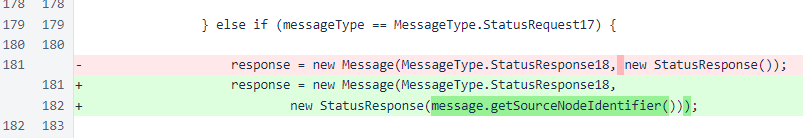
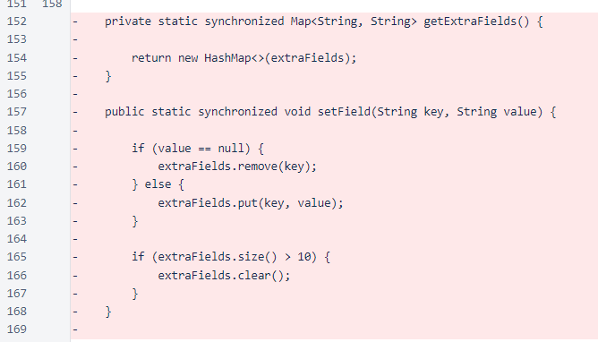
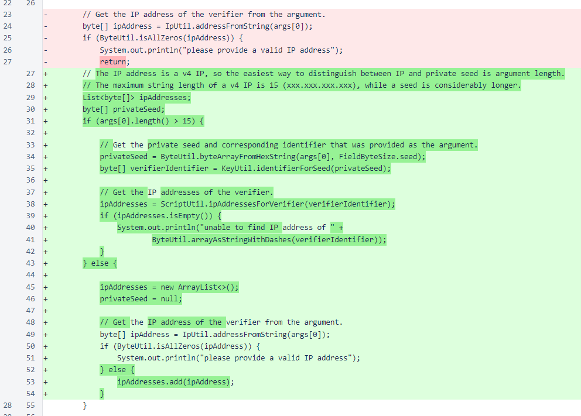

Nyzo version 481 (commit on GitHub) updates the StatusResponse on the verifier.
This version does not alter behavior of the verifier or the sentinel. It is for monitoring purposes only. To prepare for upcoming improvements in memory usage, we wanted to add memory usage to the status response. While adding memory usage, some other improvements were also made to the status response.
Certain information in the status response might be useful for an attacker trying to disable a verifier, so the StatusResponse constructor was given an additional parameter to allow it to determine whether an incoming request is self-signed.

The MeshListener class provides this parameter using the source-node identifier from incoming messages. The mesh listener only builds a response to messages for which the signature is valid, and the source-node identifier is used to check the signature, so the source-node identifier cannot be spoofed.
The StatusResponse constructor checks the identifier, and certain fields are now provided only when the identifier matches the verifier's identifier. These fields are:
The extraFields map has been removed. It was only being used for the notification budget and the S/U/L (supported/unsupported/legacy) field that was put in place to monitor adoption of the BlockWithVotesRequest37 message. The notification budget field is now set explicitly in the StatusResponse constructor, and the S/U/L field was removed because it is no longer necessary due to widespread adoption of the BlockWithVotesRequest37 message.
The StatusRequestScript has also been modified to support fetching of the privileged form of that status response. In addition to the older, IP-based invocation of this script, it can now be run by providing the private seed of the verifier to query. The IP will be fetched from the mesh in this case, as in the other scripts that require a private seed, and the message will be signed with the private seed provided.
From the verifier directory, after you download and build the Nyzo code, the script can be run with an IP address like this:
java -jar build/libs/nyzoVerifier-1.0.jar co.nyzo.verifier.scripts.StatusRequestScript 54.190.16.83
In this case, the output will be similar to this:
nickname: Argo 746
version: 481
ID: c34a...7af5
mesh: 1268 active, 2 inactive
cycle length: 466
transactions: 0
retention edge: 1391621
trailing edge: 1391645
frozen edge: 1393507 (hel1-26)
open edge: 1393507
blocks transmitted/created: 1/28
votes requested: 467
The script can be run with a private seed like this:
java -jar build/libs/nyzoVerifier-1.0.jar co.nyzo.verifier.scripts.StatusRequestScript 0123456701234567-0123456701234567-0123456701234567-0123456701234567
In this case, the output will be similar to this, with the privileged fields included:
found IP address: 54.190.16.83
nickname: Argo 746
version: 481
ID: c34a...7af5
mesh: 1268 active, 2 inactive
cycle length: 466
transactions: 0
retention edge: 1391675
trailing edge: 1391699
frozen edge: 1393561 (Larendrammagar)
open edge: 1393561
blocks transmitted/created: 1/82
votes requested: 467
new timestamp: 575
old timestamp: 1057
blocks: 1892: 0,[1391671,1393561]
balance lists: 11(G=0,r=f-1886,f=1393557)
memory usage: 50.0 MiB